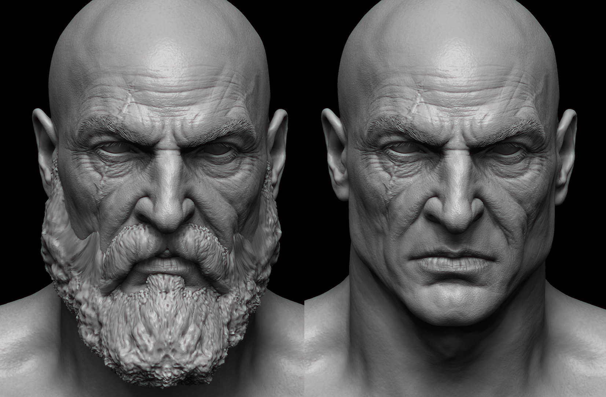
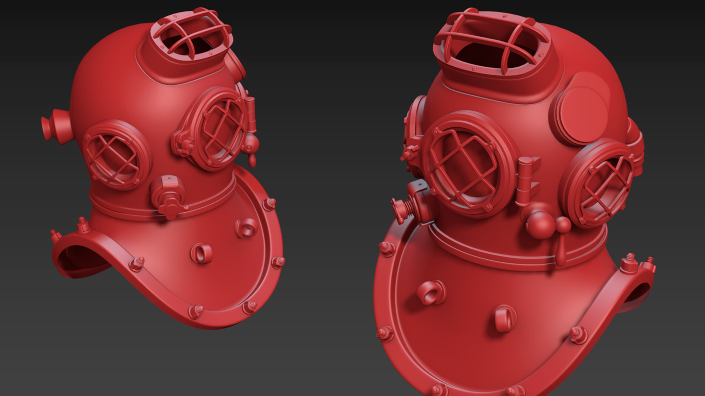
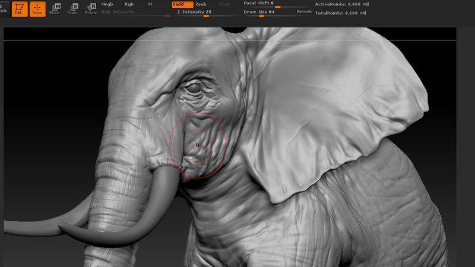

MODELAGEM 3D

Fonte:https://www.artstation.com/grassetti
A modelagem 3D conquistou popularidade no cinema, mas ganhou mais impulso com o crescimento do mercado de jogos. Os primeiros adeptos dos videogames
(Mega Drive, Atari, Super Nintendo) continuaram o cultivo da sua paixão e ainda passaram essa cultura adiante para as novas gerações.
O que é modelagem 3D?
É muito comum as pessoas associarem a ideia de modelagem 3D com a antiga técnica de manipulação de massinha, mas há uma grande diferença entre as duas: o universo virtual.
A técnica consiste na construção de objetos em 3 dimensões dentro do ambiente de um software projetado especialmente para essa tarefa. Em seguida, as criações são animadas para compor os movimentos dentro dos filmes ou jogos.
Na prática, a atuação dos profissionais acaba dividida em áreas de afinidade e interesse, ou seja, aqueles que modelam criaturas e pessoas, normalmente, não são os mesmos que criam os cenários e as cidades habitadas pelos personagens.
Seguindo essa tendência, de acordo com William Vaughan, no livro Digital Modeling, essa questão leva à classificação da técnica em duas categorias:
● hard surface: são os objetos construídos pelo homem — edificações, robôs, veículos, máquinas e todas as outras coisas artificiais;

Fonte: https://www.lynda.com/3ds-Max-tutorials/3ds-Max-Hard-Surface-Modeling-Basics/479385-2.html
● organic: são os modelos orgânicos encontrados na natureza — animais, pessoas, vegetação, montanhas etc.

Fonte: https://www.pluralsight.com/blog/film-games/whats-the-difference-between-hard-surface-and-organic-models